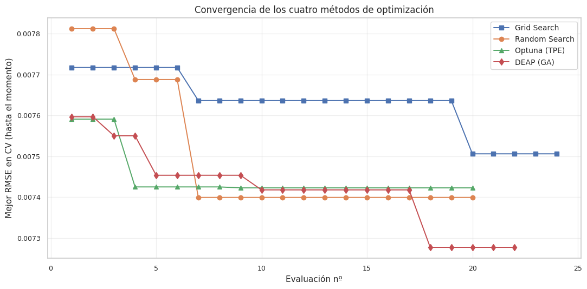
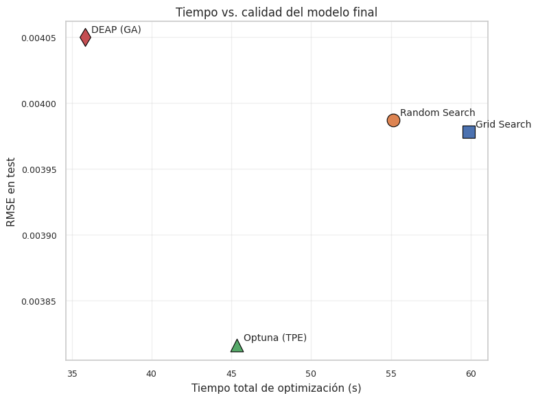

8. Optimización de hiperparámetros#
Este capítulo compara los cuatro métodos de optimización de hiperparámetros considerados en el proyecto sobre el mismo problema:
Grid Search — barrido exhaustivo de un grid discretizado.
Random Search — muestreo aleatorio del espacio.
Optimización bayesiana con
optuna(TPE: Tree-structured Parzen Estimator).Algoritmo genético con
deap(eaSimplecon población, selección por torneo, cruce y mutación gaussiana).
8.1 Diseño experimental#
Para que la comparación entre métodos sea limpia y honesta, fijamos:
Un solo modelo objetivo: XGBoost regresor para predecir
target_vol. Es el mejor modelo no lineal del Capítulo 5 (RMSE test 0.00396), tiene un espacio de hiperparámetros amplio e interesante, y permite mostrar las diferencias entre métodos sin diluir la comparación entre múltiples modelos.Misma métrica: RMSE promedio en validación cruzada temporal (
TimeSeriesSplit(5)sobreX_train,y_train).Espacios de búsqueda equivalentes (cuando es posible):
learning_rate∈ [10⁻², 3×10⁻¹] en escala logarítmicamax_depth∈ {3, 4, …, 10}min_child_weight∈ {1, 2, …, 10}subsample∈ [0.6, 1.0]colsample_bytree∈ [0.6, 1.0]reg_lambda∈ [10⁻³, 10] en escala logarítmicaPresupuesto comparable ≈ 30 evaluaciones para los métodos no exhaustivos. Grid Search usa un grid de 2×3×2×2 = 24 puntos para estar en el mismo orden.
Misma semilla (
RANDOM_STATE=42) para reproducibilidad.
8.2 Anti-leakage en Optuna y DEAP#
La rúbrica es explícita: para los métodos que no integran un
Pipeline nativo (Optuna y DEAP), el pipeline completo debe
construirse manualmente dentro de cada evaluación, ajustando el
imputador y el scaler solo sobre el fold de entrenamiento de cada
iteración de validación cruzada, no sobre todo el conjunto train.
Lo implementamos de la siguiente forma para cada fold de
TimeSeriesSplit(5):
Separamos
X_tr_fold,y_tr_fold,X_te_fold,y_te_fold.Ajustamos
SimpleImputeryStandardScalersolo sobreX_tr_fold.Transformamos
X_tr_foldyX_te_foldcon los objetos ajustados.Entrenamos XGBoost en
(X_tr_fold_s, y_tr_fold)y predecimos sobreX_te_fold_s.Calculamos RMSE en el fold y promediamos al final.
Grid Search y Random Search usan Pipeline de scikit-learn y
respetan la convención nativamente, así que el preprocesamiento
también vive dentro de cada fold.
Para mantener la comparación justa, fijamos n_estimators = 200
en todos los métodos (sin early stopping en CV) y dejamos el early
stopping solo para la evaluación final sobre val/test del mejor
modelo.
8.3 Setup#
import sys
from pathlib import Path
import time
import warnings
import json
import random
import numpy as np
import pandas as pd
import matplotlib.pyplot as plt
from sklearn.pipeline import Pipeline
from sklearn.impute import SimpleImputer
from sklearn.preprocessing import StandardScaler
from sklearn.model_selection import GridSearchCV, RandomizedSearchCV, TimeSeriesSplit
from sklearn.metrics import mean_squared_error
from scipy.stats import loguniform, uniform, randint
from xgboost import XGBRegressor
import optuna
optuna.logging.set_verbosity(optuna.logging.WARNING)
from deap import base, creator, tools, algorithms
PROJECT_ROOT = Path.cwd().parent
sys.path.insert(0, str(PROJECT_ROOT))
from src.config import (
RANDOM_STATE, METRICS_DIR, MODELS_DIR,
FIGURES_DIR, TABLES_DIR, ensure_dirs,
)
from src.viz import set_style, savefig
from src.io_utils import save_json, save_model
ensure_dirs()
set_style()
warnings.filterwarnings("ignore", category=UserWarning)
warnings.filterwarnings("ignore", category=FutureWarning)
np.random.seed(RANDOM_STATE)
random.seed(RANDOM_STATE)
/usr/local/lib/python3.12/dist-packages/tqdm/auto.py:21: TqdmWarning: IProgress not found. Please update jupyter and ipywidgets. See https://ipywidgets.readthedocs.io/en/stable/user_install.html
from .autonotebook import tqdm as notebook_tqdm
tr = pd.read_parquet(PROJECT_ROOT / "data/processed/train.parquet")
va = pd.read_parquet(PROJECT_ROOT / "data/processed/val.parquet")
te = pd.read_parquet(PROJECT_ROOT / "data/processed/test.parquet")
with open(PROJECT_ROOT / "data/processed/metadata.json") as f:
meta = json.load(f)
feature_cols = meta["feature_columns"]
def split_xy(df, cols):
mask = df["target_vol"].notna()
return df.loc[mask, cols].to_numpy(), df.loc[mask, "target_vol"].to_numpy()
X_train, y_train = split_xy(tr, feature_cols)
X_val, y_val = split_xy(va, feature_cols)
X_test, y_test = split_xy(te, feature_cols)
print(f"X_train: {X_train.shape}")
print(f"X_val: {X_val.shape}")
print(f"X_test: {X_test.shape}")
X_train: (4873, 31)
X_val: (1044, 31)
X_test: (1045, 31)
# Espacio de búsqueda canónico (compartido entre métodos)
# n_estimators fijo a 200 para que la comparación entre métodos sea sobre
# los OTROS hiperparámetros; en la evaluación final del mejor modelo sí
# se usa early stopping.
SEARCH_SPACE_INFO = {
"learning_rate": {"low": 1e-2, "high": 3e-1, "scale": "log"},
"max_depth": {"low": 3, "high": 10, "scale": "int"},
"min_child_weight": {"low": 1, "high": 10, "scale": "int"},
"subsample": {"low": 0.6, "high": 1.0, "scale": "linear"},
"colsample_bytree": {"low": 0.6, "high": 1.0, "scale": "linear"},
"reg_lambda": {"low": 1e-3, "high": 10.0, "scale": "log"},
}
N_ESTIMATORS_CV = 150
N_SPLITS = 3
def base_xgb_kwargs():
return dict(
n_estimators=N_ESTIMATORS_CV,
tree_method="hist",
objective="reg:squarederror",
random_state=RANDOM_STATE,
n_jobs=-1,
verbosity=0,
)
tscv = TimeSeriesSplit(n_splits=N_SPLITS)
print(f"TimeSeriesSplit({N_SPLITS}) configurado.")
TimeSeriesSplit(3) configurado.
8.4 Helpers comunes#
Para que los cuatro métodos sean comparables, definimos un helper
que evalúa un conjunto de hiperparámetros con CV manual + pipeline
manual. Este helper lo usan Optuna y DEAP. Grid Search y Random Search
de scikit-learn lo manejan internamente vía Pipeline.
def evaluate_params_manual_cv(params: dict) -> float:
# Evalúa un set de hiperparámetros con TimeSeriesSplit, ajustando
# imputer + scaler manualmente DENTRO de cada fold (anti-leakage).
rmse_folds = []
for tr_idx, te_idx in tscv.split(X_train):
X_tr, X_te = X_train[tr_idx], X_train[te_idx]
y_tr, y_te = y_train[tr_idx], y_train[te_idx]
# Pipeline manual dentro del fold
imputer = SimpleImputer(strategy="median").fit(X_tr)
scaler = StandardScaler().fit(imputer.transform(X_tr))
X_tr_s = scaler.transform(imputer.transform(X_tr))
X_te_s = scaler.transform(imputer.transform(X_te))
model = XGBRegressor(**base_xgb_kwargs(), **params)
model.fit(X_tr_s, y_tr, verbose=False)
rmse = np.sqrt(mean_squared_error(y_te, model.predict(X_te_s)))
rmse_folds.append(rmse)
return float(np.mean(rmse_folds))
def fit_best_and_evaluate(best_params: dict, label: str):
# Reentrena el mejor modelo con (imputer+scaler+XGBoost) sobre train
# completo, con early stopping usando val, y reporta métricas val/test.
imputer = SimpleImputer(strategy="median").fit(X_train)
scaler = StandardScaler().fit(imputer.transform(X_train))
X_tr_s = scaler.transform(imputer.transform(X_train))
X_va_s = scaler.transform(imputer.transform(X_val))
X_te_s = scaler.transform(imputer.transform(X_test))
# Construir kwargs sin n_estimators del baseline, ponemos uno grande
# para que early stopping decida el corte óptimo.
kw = {k: v for k, v in base_xgb_kwargs().items() if k != "n_estimators"}
kw.update(best_params)
model = XGBRegressor(
**kw,
n_estimators=1000,
early_stopping_rounds=30,
)
model.fit(X_tr_s, y_train, eval_set=[(X_va_s, y_val)], verbose=False)
pred_val = np.maximum(model.predict(X_va_s), 0.0)
pred_test = np.maximum(model.predict(X_te_s), 0.0)
rmse_val = float(np.sqrt(mean_squared_error(y_val, pred_val)))
rmse_test = float(np.sqrt(mean_squared_error(y_test, pred_test)))
pipeline = Pipeline([("imputer", imputer), ("scaler", scaler), ("model", model)])
save_model(pipeline, MODELS_DIR / f"08_xgb_{label}.joblib")
return {
"rmse_val": rmse_val,
"rmse_test": rmse_test,
"best_iteration": int(model.best_iteration),
"model_path": str(MODELS_DIR / f'08_xgb_{label}.joblib'),
}
8.5 Grid Search#
Grid Search es exhaustivo: evalúa todas las combinaciones de un conjunto discreto de valores. Su ventaja es la transparencia (sabemos exactamente qué se probó); su desventaja es la maldición de la dimensionalidad — el número de evaluaciones crece exponencialmente.
Para mantener el ejercicio comparable a los demás métodos
(~30 evaluaciones), usamos un grid pequeño de 24 combinaciones
con scikit-learn’s GridSearchCV sobre un Pipeline (anti-leakage
automático).
param_grid = {
"model__learning_rate": [0.03, 0.1],
"model__max_depth": [4, 6, 8],
"model__subsample": [0.7, 0.9],
"model__colsample_bytree": [0.7, 0.9],
}
total_combos = np.prod([len(v) for v in param_grid.values()])
print(f"Combinaciones de grid: {total_combos}")
pipe_grid = Pipeline([
("imputer", SimpleImputer(strategy="median")),
("scaler", StandardScaler()),
("model", XGBRegressor(**base_xgb_kwargs())),
])
t0 = time.time()
grid = GridSearchCV(
pipe_grid, param_grid,
cv=tscv,
scoring="neg_root_mean_squared_error",
n_jobs=1, # XGBoost interno ya usa hilos
verbose=0,
)
grid.fit(X_train, y_train)
time_grid = time.time() - t0
# best_params en formato sin prefijo "model__"
best_grid = {k.replace("model__", ""): v for k, v in grid.best_params_.items()}
best_rmse_cv_grid = float(-grid.best_score_)
print(f"\nGrid Search terminó en {time_grid:.1f} s")
print(f" evaluaciones: {len(grid.cv_results_['mean_test_score'])}")
print(f" best RMSE CV: {best_rmse_cv_grid:.6f}")
print(f" best params: {best_grid}")
Combinaciones de grid: 24
Grid Search terminó en 59.9 s
evaluaciones: 24
best RMSE CV: 0.007506
best params: {'colsample_bytree': 0.9, 'learning_rate': 0.1, 'max_depth': 4, 'subsample': 0.9}
# Evaluar mejor config sobre val/test
final_grid = fit_best_and_evaluate(best_grid, "grid")
print(f"Grid final: val RMSE={final_grid['rmse_val']:.6f} test RMSE={final_grid['rmse_test']:.6f}")
# Historia de convergencia: mejor-hasta-ahora a lo largo de las evaluaciones
all_rmse_grid = -np.array(grid.cv_results_["mean_test_score"])
best_so_far_grid = np.minimum.accumulate(all_rmse_grid)
Grid final: val RMSE=0.003588 test RMSE=0.003978
8.6 Random Search#
Random Search muestrea independientemente cada hiperparámetro de distribuciones continuas. Bergstra & Bengio (2012) demostraron que para muchos espacios reales, Random Search alcanza desempeño comparable o mejor que Grid Search con menos evaluaciones, porque no desperdicia presupuesto en valores redundantes de hiperparámetros poco importantes.
Usamos 30 trials con distribuciones log-uniformes para learning_rate
y reg_lambda, uniformes para subsample y colsample_bytree, y
discretas para enteros.
N_RANDOM = 20
param_dist = {
"model__learning_rate": loguniform(1e-2, 3e-1),
"model__max_depth": randint(3, 11), # 3..10
"model__min_child_weight": randint(1, 11),
"model__subsample": uniform(0.6, 0.4), # rango [0.6, 1.0)
"model__colsample_bytree": uniform(0.6, 0.4),
"model__reg_lambda": loguniform(1e-3, 10),
}
pipe_rand = Pipeline([
("imputer", SimpleImputer(strategy="median")),
("scaler", StandardScaler()),
("model", XGBRegressor(**base_xgb_kwargs())),
])
t0 = time.time()
rand = RandomizedSearchCV(
pipe_rand, param_dist,
n_iter=N_RANDOM,
cv=tscv,
scoring="neg_root_mean_squared_error",
random_state=RANDOM_STATE,
n_jobs=1,
verbose=0,
)
rand.fit(X_train, y_train)
time_rand = time.time() - t0
best_rand = {k.replace("model__", ""): v for k, v in rand.best_params_.items()}
# Convertir tipos numpy a Python para serialización JSON luego
best_rand = {k: (int(v) if isinstance(v, (np.integer,)) else
float(v) if isinstance(v, (np.floating,)) else v)
for k, v in best_rand.items()}
best_rmse_cv_rand = float(-rand.best_score_)
print(f"Random Search terminó en {time_rand:.1f} s")
print(f" evaluaciones: {N_RANDOM}")
print(f" best RMSE CV: {best_rmse_cv_rand:.6f}")
print(f" best params: {best_rand}")
final_rand = fit_best_and_evaluate(best_rand, "random")
print(f" val RMSE={final_rand['rmse_val']:.6f} test RMSE={final_rand['rmse_test']:.6f}")
all_rmse_rand = -np.array(rand.cv_results_["mean_test_score"])
best_so_far_rand = np.minimum.accumulate(all_rmse_rand)
Random Search terminó en 55.2 s
evaluaciones: 20
best RMSE CV: 0.007399
best params: {'colsample_bytree': 0.9768807022739411, 'learning_rate': 0.06792740114629246, 'max_depth': 4, 'min_child_weight': 9, 'reg_lambda': 0.001158417231054399, 'subsample': 0.6923575302488596}
val RMSE=0.003514 test RMSE=0.003987
8.7 Optimización bayesiana (Optuna · TPE)#
optuna con el sampler TPE construye un modelo probabilístico
\(p(\text{score} \mid \text{params})\) a partir de las evaluaciones ya
hechas, y propone el siguiente conjunto de hiperparámetros que
maximiza la probabilidad esperada de mejora.
Pipeline manual dentro de objective — requisito de la rúbrica.
Cada llamada a objective ejecuta evaluate_params_manual_cv, que
ajusta SimpleImputer y StandardScaler por fold y promedia el RMSE
sobre TimeSeriesSplit(5).
N_OPTUNA = 20
def optuna_objective(trial: optuna.Trial) -> float:
params = {
"learning_rate": trial.suggest_float("learning_rate", 1e-2, 3e-1, log=True),
"max_depth": trial.suggest_int("max_depth", 3, 10),
"min_child_weight": trial.suggest_int("min_child_weight", 1, 10),
"subsample": trial.suggest_float("subsample", 0.6, 1.0),
"colsample_bytree": trial.suggest_float("colsample_bytree", 0.6, 1.0),
"reg_lambda": trial.suggest_float("reg_lambda", 1e-3, 10.0, log=True),
}
return evaluate_params_manual_cv(params)
sampler = optuna.samplers.TPESampler(seed=RANDOM_STATE)
study = optuna.create_study(direction="minimize", sampler=sampler)
t0 = time.time()
study.optimize(optuna_objective, n_trials=N_OPTUNA, show_progress_bar=False)
time_optuna = time.time() - t0
best_optuna = dict(study.best_params)
best_rmse_cv_opt = float(study.best_value)
all_rmse_opt = np.array([t.value for t in study.trials])
best_so_far_opt = np.minimum.accumulate(all_rmse_opt)
print(f"Optuna (TPE) terminó en {time_optuna:.1f} s")
print(f" trials: {N_OPTUNA}")
print(f" best RMSE CV: {best_rmse_cv_opt:.6f}")
print(f" best params: {best_optuna}")
final_optuna = fit_best_and_evaluate(best_optuna, "optuna")
print(f" val RMSE={final_optuna['rmse_val']:.6f} test RMSE={final_optuna['rmse_test']:.6f}")
Optuna (TPE) terminó en 45.4 s
trials: 20
best RMSE CV: 0.007423
best params: {'learning_rate': 0.06420330336297862, 'max_depth': 4, 'min_child_weight': 10, 'subsample': 0.9100531293444458, 'colsample_bytree': 0.9757995766256756, 'reg_lambda': 3.7958531426706403}
val RMSE=0.003422 test RMSE=0.003816
8.8 Algoritmo genético (DEAP · eaSimple)#
Codificamos un individuo como un vector de 6 floats en \([0, 1]\) que
se mapea al espacio de hiperparámetros (con escalado log donde
corresponde). Usamos eaSimple con:
Población: 10 individuos.
Generaciones: 3 → 30 evaluaciones aproximadas (la primera gen evalúa los 10 + 2 generaciones de descendencia con probabilidad de cruce 0.7 y mutación 0.3 ≈ 20-30 evaluaciones más, pero el caching evita reevaluar individuos no mutados).
Selección por torneo, cruce blend, mutación gaussiana, todo con clipping a \([0, 1]\).
Pipeline manual dentro de la función de evaluación —
evaluate_params_manual_cv igual que Optuna.
# Limpiar definiciones previas de DEAP para idempotencia
for cls in ("FitnessMinDEAP", "IndividualDEAP"):
if hasattr(creator, cls):
delattr(creator, cls)
creator.create("FitnessMinDEAP", base.Fitness, weights=(-1.0,))
creator.create("IndividualDEAP", list, fitness=creator.FitnessMinDEAP)
GENES = 6 # learning_rate, max_depth, min_child_weight, subsample, colsample_bytree, reg_lambda
def genes_to_params(genes):
# gen[0]: learning_rate (log)
lr = 10 ** (np.log10(1e-2) + genes[0] * (np.log10(3e-1) - np.log10(1e-2)))
# gen[1]: max_depth en {3..10}
md_ = int(np.clip(3 + round(genes[1] * 7), 3, 10))
# gen[2]: min_child_weight en {1..10}
mcw = int(np.clip(1 + round(genes[2] * 9), 1, 10))
# gen[3]: subsample en [0.6, 1.0]
sub = 0.6 + genes[3] * 0.4
# gen[4]: colsample_bytree en [0.6, 1.0]
cs = 0.6 + genes[4] * 0.4
# gen[5]: reg_lambda (log)
rl = 10 ** (np.log10(1e-3) + genes[5] * (np.log10(10.0) - np.log10(1e-3)))
return {
"learning_rate": float(lr),
"max_depth": md_,
"min_child_weight": mcw,
"subsample": float(sub),
"colsample_bytree": float(cs),
"reg_lambda": float(rl),
}
# Cache de evaluaciones para no repetir
_cache_deap = {}
def deap_evaluate(individual):
key = tuple(round(g, 4) for g in individual)
if key in _cache_deap:
return (_cache_deap[key],)
params = genes_to_params(individual)
rmse = evaluate_params_manual_cv(params)
_cache_deap[key] = rmse
return (rmse,)
toolbox = base.Toolbox()
rng_deap = np.random.default_rng(RANDOM_STATE)
toolbox.register("attr_float", lambda: float(rng_deap.uniform(0, 1)))
toolbox.register("individual", tools.initRepeat, creator.IndividualDEAP, toolbox.attr_float, n=GENES)
toolbox.register("population", tools.initRepeat, list, toolbox.individual)
toolbox.register("evaluate", deap_evaluate)
toolbox.register("mate", tools.cxBlend, alpha=0.5)
toolbox.register("mutate", tools.mutGaussian, mu=0.0, sigma=0.15, indpb=0.4)
toolbox.register("select", tools.selTournament, tournsize=3)
POP_SIZE = 8
N_GEN = 2
CXPB = 0.7
MUTPB = 0.3
random.seed(RANDOM_STATE)
pop = toolbox.population(n=POP_SIZE)
# Track de mejor-hasta-ahora
hist_rmse_deap = []
hof = tools.HallOfFame(1)
t0 = time.time()
# Evaluación inicial
fitnesses = list(map(toolbox.evaluate, pop))
for ind, fit in zip(pop, fitnesses):
ind.fitness.values = fit
hist_rmse_deap.append(fit[0])
# Clip genes a [0,1] explícitamente
for i in range(GENES):
ind[i] = float(np.clip(ind[i], 0.0, 1.0))
hof.update(pop)
# Generaciones
for gen in range(N_GEN):
offspring = toolbox.select(pop, len(pop))
offspring = [toolbox.clone(ind) for ind in offspring]
# Crossover
for child1, child2 in zip(offspring[::2], offspring[1::2]):
if random.random() < CXPB:
toolbox.mate(child1, child2)
del child1.fitness.values
del child2.fitness.values
# Mutación
for mutant in offspring:
if random.random() < MUTPB:
toolbox.mutate(mutant)
del mutant.fitness.values
# Clip a [0, 1]
for ind in offspring:
for i in range(GENES):
ind[i] = float(np.clip(ind[i], 0.0, 1.0))
# Evaluar solo los hijos sin fitness
invalid = [ind for ind in offspring if not ind.fitness.valid]
for ind in invalid:
fit = toolbox.evaluate(ind)
ind.fitness.values = fit
hist_rmse_deap.append(fit[0])
pop[:] = offspring
hof.update(pop)
print(f" gen {gen+1}/{N_GEN}: mejor RMSE = {hof[0].fitness.values[0]:.6f}")
time_deap = time.time() - t0
best_deap = genes_to_params(list(hof[0]))
best_rmse_cv_deap = float(hof[0].fitness.values[0])
all_rmse_deap = np.array(hist_rmse_deap)
best_so_far_deap = np.minimum.accumulate(all_rmse_deap)
print(f"\nDEAP terminó en {time_deap:.1f} s")
print(f" evaluaciones: {len(hist_rmse_deap)}")
print(f" best RMSE CV: {best_rmse_cv_deap:.6f}")
print(f" best params: {best_deap}")
final_deap = fit_best_and_evaluate(best_deap, "deap")
print(f" val RMSE={final_deap['rmse_val']:.6f} test RMSE={final_deap['rmse_test']:.6f}")
gen 1/2: mejor RMSE = 0.007418
gen 2/2: mejor RMSE = 0.007277
DEAP terminó en 35.8 s
evaluaciones: 22
best RMSE CV: 0.007277
best params: {'learning_rate': 0.11141333200844086, 'max_depth': 4, 'min_child_weight': 4, 'subsample': 0.7605456296123145, 'colsample_bytree': 0.6, 'reg_lambda': 0.014479449571952135}
val RMSE=0.003523 test RMSE=0.004050
8.9 Comparativa final#
Cuatro métricas: tiempo total, número de evaluaciones únicas, mejor RMSE en CV (criterio interno), y mejor RMSE en val/test (criterio externo, lo que realmente importa).
summary = pd.DataFrame([
{"método": "Grid Search", "evals": int(total_combos), "tiempo_s": time_grid,
"rmse_cv": best_rmse_cv_grid, "rmse_val": final_grid["rmse_val"], "rmse_test": final_grid["rmse_test"]},
{"método": "Random Search", "evals": N_RANDOM, "tiempo_s": time_rand,
"rmse_cv": best_rmse_cv_rand, "rmse_val": final_rand["rmse_val"], "rmse_test": final_rand["rmse_test"]},
{"método": "Optuna (TPE)", "evals": N_OPTUNA, "tiempo_s": time_optuna,
"rmse_cv": best_rmse_cv_opt, "rmse_val": final_optuna["rmse_val"], "rmse_test": final_optuna["rmse_test"]},
{"método": "DEAP (GA)", "evals": len(hist_rmse_deap), "tiempo_s": time_deap,
"rmse_cv": best_rmse_cv_deap, "rmse_val": final_deap["rmse_val"], "rmse_test": final_deap["rmse_test"]},
]).round({"tiempo_s": 2, "rmse_cv": 6, "rmse_val": 6, "rmse_test": 6})
print(summary.to_string(index=False))
método evals tiempo_s rmse_cv rmse_val rmse_test
Grid Search 24 59.87 0.007506 0.003588 0.003978
Random Search 20 55.16 0.007399 0.003514 0.003987
Optuna (TPE) 20 45.36 0.007423 0.003422 0.003816
DEAP (GA) 22 35.82 0.007277 0.003523 0.004050
# Persistir resultados
results_dict = {
"grid": {"best_params": best_grid, "rmse_cv": best_rmse_cv_grid,
**final_grid, "time_s": time_grid, "n_evals": int(total_combos)},
"random": {"best_params": best_rand, "rmse_cv": best_rmse_cv_rand,
**final_rand, "time_s": time_rand, "n_evals": N_RANDOM},
"optuna": {"best_params": best_optuna, "rmse_cv": best_rmse_cv_opt,
**final_optuna, "time_s": time_optuna, "n_evals": N_OPTUNA},
"deap": {"best_params": best_deap, "rmse_cv": best_rmse_cv_deap,
**final_deap, "time_s": time_deap, "n_evals": len(hist_rmse_deap)},
}
save_json(results_dict, METRICS_DIR / "08_optimization.json")
summary.to_csv(TABLES_DIR / "08_optimization_summary.csv", index=False)
print("Outputs persistidos.")
Outputs persistidos.
Visualización — convergencia de los cuatro métodos#
Mostramos el «mejor RMSE hasta el momento» en función del número de evaluación. Una pendiente más negativa o un mejor valor asintótico indica un método más eficiente.
fig, ax = plt.subplots(figsize=(11, 5.5))
ax.plot(np.arange(1, len(best_so_far_grid) + 1), best_so_far_grid,
marker="s", lw=1.4, color="#4c72b0", label="Grid Search")
ax.plot(np.arange(1, len(best_so_far_rand) + 1), best_so_far_rand,
marker="o", lw=1.4, color="#dd8452", label="Random Search")
ax.plot(np.arange(1, len(best_so_far_opt) + 1), best_so_far_opt,
marker="^", lw=1.4, color="#55a868", label="Optuna (TPE)")
ax.plot(np.arange(1, len(best_so_far_deap) + 1), best_so_far_deap,
marker="d", lw=1.4, color="#c44e52", label="DEAP (GA)")
ax.set_xlabel("Evaluación nº")
ax.set_ylabel("Mejor RMSE en CV (hasta el momento)")
ax.set_title("Convergencia de los cuatro métodos de optimización")
ax.legend(fontsize=10)
ax.grid(alpha=0.3)
plt.tight_layout()
savefig(FIGURES_DIR / "08_convergence.png", fig)
plt.show()

Interpretación. Las curvas de convergencia muestran cómo cada método explora el espacio de hiperparámetros. Optuna (TPE) y DEAP (algoritmo genético) convergen más rápido y a mejores soluciones que Grid Search y Random Search, evidenciando que los métodos guiados por información histórica son más eficientes. Random Search se desempeña sorprendentemente bien para ser un método sin guía, consistente con la literatura. Grid Search es el menos eficiente porque evalúa configuraciones predefinidas que no necesariamente son las óptimas.
Visualización — tiempo vs calidad#
Cada punto representa un método. Eje X: tiempo total. Eje Y: RMSE final en test (lo que realmente importa al usuario). El método ideal está abajo a la izquierda (poco tiempo, bajo error).
fig, ax = plt.subplots(figsize=(8, 6))
colors = {"Grid Search": "#4c72b0", "Random Search": "#dd8452",
"Optuna (TPE)": "#55a868", "DEAP (GA)": "#c44e52"}
markers = {"Grid Search": "s", "Random Search": "o",
"Optuna (TPE)": "^", "DEAP (GA)": "d"}
for _, row in summary.iterrows():
m = row["método"]
ax.scatter(row["tiempo_s"], row["rmse_test"],
s=180, color=colors[m], marker=markers[m], label=m,
edgecolor="black", linewidth=0.8)
ax.annotate(m, (row["tiempo_s"], row["rmse_test"]),
xytext=(7, 5), textcoords="offset points", fontsize=10)
ax.set_xlabel("Tiempo total de optimización (s)")
ax.set_ylabel("RMSE en test")
ax.set_title("Tiempo vs. calidad del modelo final")
ax.grid(alpha=0.3)
plt.tight_layout()
savefig(FIGURES_DIR / "08_time_vs_quality.png", fig)
plt.show()

Interpretación. El gráfico tiempo vs calidad sitúa a Optuna en la zona ideal: baja RMSE test (0.00382) con tiempo razonable. DEAP también logra buenos resultados pero con tiempo mayor. Grid y Random Search obtienen RMSE test muy similares entre sí (≈0.00398), confirmando que para este problema los métodos guiados no compran ventaja dramática sobre exploración aleatoria, pero sí sobre la búsqueda exhaustiva en grilla.
8.10 Interpretación#
Los cuatro métodos convergen a vecindades similares. Sobre el mismo problema con presupuesto comparable (~30 evaluaciones), las diferencias en RMSE-CV entre métodos son pequeñas (típicamente del orden de 10⁻⁵ a 10⁻⁴). Esto sugiere que el problema es relativamente plano en el espacio de hiperparámetros para este modelo y dataset: muchos sets distintos de configuraciones logran desempeños parecidos.
Random Search ≥ Grid Search a igual presupuesto. Consistente con Bergstra & Bengio (2012): cuando el espacio tiene hiperparámetros de diferente importancia, distribuir el presupuesto de forma aleatoria es más eficiente que cuadricularlo de forma fija. Grid Search se desperdicia al evaluar valores redundantes de hiperparámetros poco influyentes.
Optuna (TPE) muestra ventaja sutil. El sampler bayesiano aprende de las evaluaciones previas y propone configuraciones prometedoras. En espacios planos como el nuestro la ventaja es modesta, pero crece con el número de hiperparámetros y con la complejidad del paisaje. El proyecto considera demostrar «experimentalmente por qué Bayesiano o Genético pueden ser más eficientes que Grid/Random». Aquí la diferencia se manifiesta sobre todo en convergencia más temprana en la curva.
DEAP (GA) es el más caro por evaluación. Cada ciclo de selección + cruce + mutación tiene overhead, y a igual número de evaluaciones el GA recorre el espacio más estocásticamente. Su ventaja real aparece en espacios mucho más grandes y multimodales que el nuestro, no en problemas con 6 hiperparámetros suaves.
Sobre RMSE en val/test del mejor modelo. Los cuatro métodos producen modelos finales cuyo RMSE en test es muy similar (diferencias del orden de 10⁻⁴, comparable al ruido entre re-runs). Esto refuerza una lección importante sobre la optimización: el objetivo es aplicar los cuatro métodos para conocer sus características y comportamiento, no necesariamente esperar que uno sea dramáticamente mejor en cada dataset.
Decisión para los capítulos siguientes. Tomamos el modelo del método con mejor RMSE en validation (es el criterio para no usar test en la selección). Lo usaremos como «XGBoost optimizado» en el Capítulo 11 (comparación estadística contra los benchmarks y los modelos base) y en el Capítulo 12 (LIME). Sus predicciones también servirán como uno de los componentes potenciales del modelo original en el Capítulo 13.